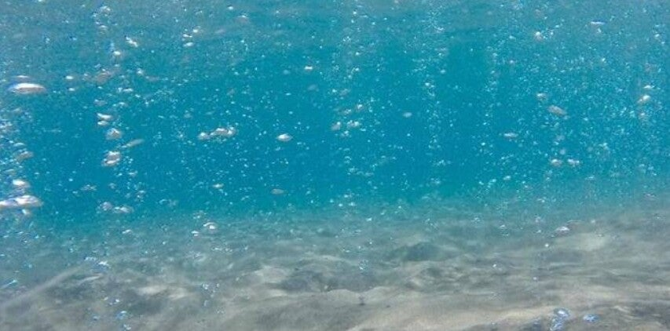
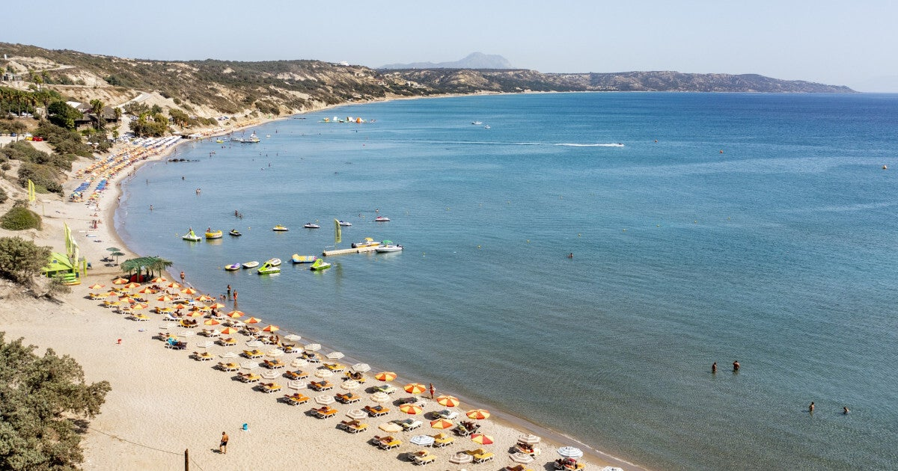

Over dit strand
Paradise Beach, ook wel bekend als Bubble Beach, is een populair en levendig strand in het hart van Kefalos. Dit zandstrand met zijn kristalheldere turquoise water is kalm, ondiep en biedt een aangename temperatuur – de perfecte omgeving voor gezinnen en kinderen.

Sfeer & ligging
Een van de belangrijkste attracties zijn de natuurlijke bubbels, die uit de zeebodem oprijzen door vulkanische gassen van de nabijgelegen vulkaan op Nisyros. Dit creëert een jacuzzi-achtig effect en geeft het water een sprankelende uitstraling.


Goed om te weten
Ondanks de naam 'Paradise' is het geen verborgen tropisch toevluchtsoord; het is een drukbezocht en goed georganiseerd strand. Deze populariteit is waarschijnlijk te danken aan de naam en de unieke bubbels, wat veel toeristen aantrekt. Voorzieningen zoals ligbedden, parasols, en een beachbar/restaurant met snacks, drankjes en maaltijden zijn volop aanwezig. Verder zijn er douches, kleedruimtes, gratis parkeergelegenheid, en een scala aan watersportactiviteiten.